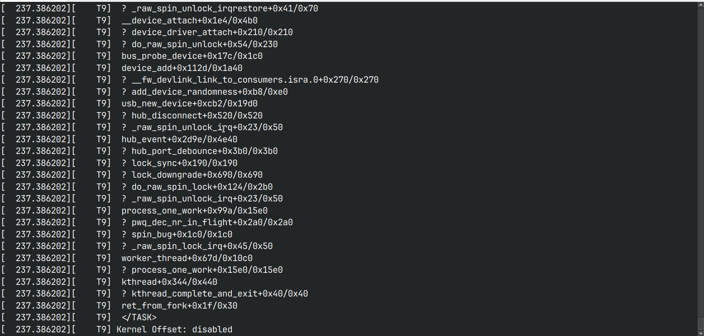

How to reproduce bugs from syzkaller
Case 1: If you have a C reproducer
-
Navigate to the syzkaller bug link
-
If the bug is found in the upstream kernel
then download the kernel-image from the link using
wget -
If the bug is found not on the upstream kernel, then it is best to download the
.configfile and build the latest upstream kernel
-
-
Now that the kernel is downloaded and ready, download these artifacts too.
- disk image
- C repro, save as
.cfile

-
Extract the disk image and kernel image
$ xz --decompress <disk-image> $ xz --decompress <kernel-image> -
Start VM, by running commands
$ export KERNEL_IMG=<full-path-to-kernel-image> $ export RFS_IMG=<full-path-to-disk-image> $ qemu-system-x86_64 -m 2G -smp 2 -kernel ${KERNEL_IMG} -append "console=ttyS0 root=/dev/sda1 earlyprintk=serial net.ifnames=0" -drive file=${RFS_IMG},format=raw -net user,host=10.0.2.10,hostfwd=tcp:127.0.0.1:10021-:22 -net nic,model=e1000 -enable-kvm -nographic -pidfile vm.pid 2>&1 | tee vm.log -
Compile the C repro file
$ gcc -o repro1 repro1.cNote: Cross compile for arch other than x86_64
-
Copy the compiled executable file into vm
$ scp -P 10021 -r ./repro1 root@localhost:~/ -
SSH into the VM and run the compiled program
$ ssh root@localhost -p 10021 # ./repro1 -
If the bug is not fixed then it will give a kernel panic.

-
If there is no panic then the bug has been fixed.
Case 2: If you have a Syz reproducer
-
Navigate to the syzkaller bug link
-
If the bug is found in the upstream kernel
then download the kernel-image from the link using
wget -
If the bug is found not on the upstream kernel, then it is best to download the
.configfile and build the latest upstream kernel
-
-
Now that the kernel is downloaded and ready, download these artifacts too.
-
disk image
-
syz repro, save as
.txtfile
-
-
Extract the disk image and kernel image
$ xz --decompress <disk-image> $ xz --decompress <kernel-image> -
Start VM, by running commands
$ export KERNEL_IMG=<full-path-to-kernel-image> $ export RFS_IMG=<full-path-to-disk-image> $ qemu-system-x86_64 -m 2G -smp 2 -kernel ${KERNEL_IMG} -append "console=ttyS0 root=/dev/sda1 earlyprintk=serial net.ifnames=0" -drive file=${RFS_IMG},format=raw -net user,host=10.0.2.10,hostfwd=tcp:127.0.0.1:10021-:22 -net nic,model=e1000 -enable-kvm -nographic -pidfile vm.pid 2>&1 | tee vm.log -
Copy the files
syz-executorsyz-execprogandsyz.txtinto vm$ scp -P 10021 -r <path-to-syzkaller>/syzkaller/bin/linux_amd64/syz-executor <path-to-syzkaller>/syzkaller/bin/linux_amd64/syz-execprog ./syz.txt root@localhost:~/Note: files
syz-executorandsyz-execprogare part of syzkaller, for this you have to compile the syzkaller on your machine. For instructions on compiling syzkaller see link -
SSH into the VM and run the command
$ ssh root@localhost -p 10021 # ./syz-execprog -executor=./syz-executor -repeat=0 -procs=12 -cover=0 ./syz.txt -
If the bug is not fixed then it will give a kernel panic.
-
If there is no panic then the bug probably has been fixed.